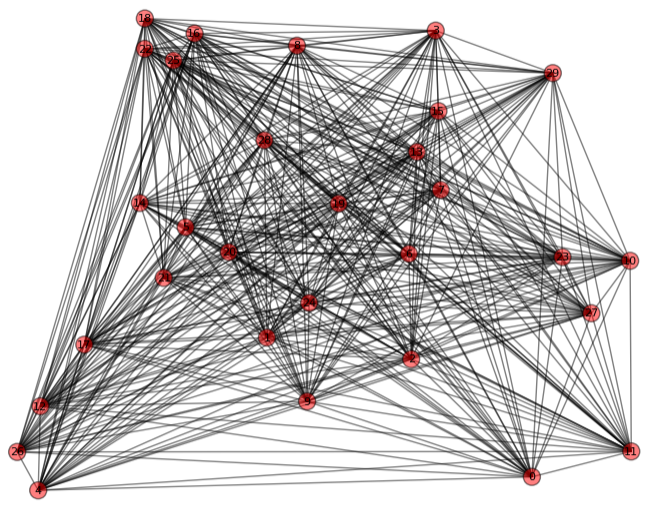

O programa criado deve ler um grafo Hamiltoniano ponderado a partir de um arquivo qualquer e através de um algoritmo visto em sala (2-otimal ou Twice-Around) obter 10 soluções diferentes para o problema do caixeiro-viajante.
Para obter soluções distintas para o problema há algumas heurísticas comumente adotadas na prática: utilizar diferentes inicializações, ou seja, soluções iniciais. Elas podem ser geradas simplesmente aleatoriamente (selecionando vértices quaisquer) ou utilizando alguma heurística, como por exemplo, a escolha do vizinho mais próximo por exemplo. Dessa forma, escolhe-se aleatoriamente apenas o primeiro vértice do ciclo (v0) e depois sempre é escolhido como próximo elemento da sequência o vizinho mais próximo do vértice atual, até que o ciclo Hamiltoniano seja formado (não sobre mais vértices).
Para resolver o problema do Caixeiro Viajante usaremos o algoritmo Twice-Around, que consiste na aplicação do algoritmo de Prim no grafo, duplicando o menor caminho encontrado, após isso aplicar o algoritmo de Fleury, que será utilizada uma função presente na biblioteca NetworkX, e removendo-se as repetições.
1 2 3 4 5 6 7 8 9 10 11 | Ler grafo G = (V, E, w) H ← ∅ Passo1. T ← MST(G) (Kruskal ou Prim) Para cada e∈T T ← T + e (Duplique aresta e) Passo 2. Encontre um circuito Euleriano L em T (Fleury) Passo 3. Enquanto L≠∅ { Escolha sequencialmente lk∈L Se lk∉H então H ← H U {lk} L ← L – {lk} |
1 2 3 4 5 6 7 8 9 10 11 12 13 14 15 16 17 18 19 20 21 22 23 24 25 26 27 28 29 30 31 32 33 34 35 36 37 38 39 40 41 42 43 44 45 46 47 48 49 50 51 52 53 54 55 56 57 58 59 60 61 62 63 64 65 66 67 68 69 70 71 72 73 74 75 76 77 78 79 80 81 82 83 84 85 86 87 88 89 90 91 92 93 94 | import networkx as nx # Para a parte de criar e gerenciar grafos import numpy as np from random import randint import matplotlib.pyplot as plt # Para exibir na tela def Desenha(G,pos,lineColor,filename): nx.draw_networkx_nodes(G, pos, node_color='b', node_size=150) nx.draw_networkx_edges(G, pos, edgelist=G.edges(), edge_color=lineColor, arrows=True) nx.draw_networkx_labels(G, pos, font_size=8) labels = nx.get_edge_attributes(G, 'weight') nx.draw_networkx_edge_labels(G, pos, edge_labels=labels, font_size=8) plt.savefig(filename+'.png',dpi=250) plt.clf() def MST_Prim(G,r): Q = [] # Fila de prioridades for v in G.nodes(): if v is r: G.node[v]['lambda'] = 0 else: G.node[v]['lambda'] = np.Infinity G.node[v]['predecessor'] = None Q.append([v, G.node[v]['lambda']]) S = [] # Ja finalizados while(Q): Q.sort(key=lambda item: item[1]) u = Q.pop(0) S.append(u[0]) for v in G.neighbors(u[0]): if (v not in S): if (G.node[v]['lambda'] >= G.edge[u[0]][v]['weight']): Q.remove([v, G.node[v]['lambda']]) G.node[v]['lambda'] = G.edge[u[0]][v]['weight'] G.node[v]['predecessor'] = u[0] Q.append([v, G.node[v]['lambda']]) MST = nx.Graph() MST.add_nodes_from(G.nodes()) for v in S: if G.node[v]['predecessor'] != None: u = G.node[v]['predecessor'] MST.add_edge(v, u, weight=G.edge[v][u]['weight']) return MST def TSP_TwiceAround(G): H = [] # Conjunto solução inicia vazio (será preenchido com o ciclo hamiltoniano) raiz = randint(0,G.number_of_nodes()-1) # Para calcular a MST no passo seguinte, escolhemos uma raiz aleatória T = MST_Prim(G, raiz) # MST do grafo D = nx.MultiGraph() # Para que seja possível duplicar as arestas, devido as arestas paralelas, é necessário utilizar um multigrafo D.add_weighted_edges_from(T.edges(data=True)) # Duplicamos as arestas adicionando-as duas vezes no mesmo grafo D.add_weighted_edges_from(T.edges(data=True)) L = list(nx.eulerian_circuit(D,source=raiz)) # Lista com as arestas que formam um Tour de Euler # Com o Tour de Euler em seu formato apropriado, iniciamos o processo de eliminação de repetição de vértices peso = 0 H.append(L[0][0]) for u,v in L: if v not in H: H.append(v) u = D.get_edge_data(u,v) peso = peso + u[0]['weight']['weight'] # Adiciona o vértice origem no final do caminho para completar o ciclo H.append(H[0]) return L,H,peso def main(): A = np.loadtxt('matriz.txt') G = nx.from_numpy_matrix(A) with open("resultado.txt", 'w') as arquivo: for i in range(10): arquivo.write("Iteracao "+str(i+1)) cicloHamiltoniano = TSP_TwiceAround(G) arquivo.write("\nTour de Euler extraido: " + str(cicloHamiltoniano[0])) arquivo.write("\nCiclo Hamiltoniano Final: "+str(cicloHamiltoniano[1])) arquivo.write("\nPeso: " + str(cicloHamiltoniano[2])) arquivo.write("\n___________________________________________________________\n") if __name__=='__main__': main() |
Liste as 3 melhores soluções e as 3 piores obtidas. Qual a diferença de custo entre a melhor e a pior? Discuta como a diferença pode ser significativa.
Considere o grafo a seguir de 30 vértices (HA30).
